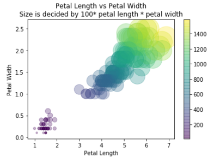

Matplotlib
A Very Helpful Book
- Available online: https://jakevdp.github.io/PythonDataScienceHandbook/
- Many useful sample. We will use some in this class.

Matplotlib
- Matplotlib: the most popular python plot library in my opinion
- Data visualization library built on NumPy arrays and designed to work with the broader SciPy.
- version 0.1 was released in 2003.
- Sample Code: Introduction-To-Matplotlib.ipynb at https://github.com/ruiwu1990/CSCI_4120/blob/master/Matplotlib/04.00-Introduction-To-Matplotlib.ipynb.

Matplotlib Sample Code
- Python import libraries with a short name:
- Import matplotlib as mpl
- Magic function: show(), display visualization results not in Jupyter notebook, you can also do it in a terminal or iPython.
- show() should be used only once per Python session. For example, if you execute “python plot.py” in a terminal, you should only have show() executed in the plot.py file once.
- “%matplotlib inline” will lead to static images of your plot embedded in the notebook
- plot(x,y,’-’) function, solid line
- subplot(x,y,z): rows, columns, panel number
How to Draw Simple Line Plots
- Let’s learn basics about simple line plots
- Sample Code: Simple-Line-Plots.ipynb https://github.com/ruiwu1990/CSCI_4120/blob/master/Matplotlib/04.01-Simple-Line-Plots.ipynb
- seaborn-whitegrid: grid graph
- Basic steps:
- Initialization: create a figure and axes.
- Define x-axis data and y-axis data
- Set labels
- Plot(): if you do not define still, color parameters, matplotlib will use default values
- About colors: names, short color code (e.g. r,g,b) https://matplotlib.org/2.0.2/api/colors_api.html, gray scale, hex code, RGB values, HTML names (https://www.w3schools.com/colors/colors_names.asp)
- Line style:
- String: solid, dashed…
- Code: ‘-’, ‘--’ …
- Combined style with color: -g (solid green), --r (dashed red)
- Set the range: xlim(-1, 11) from -1 to 11, you can even reverse the range
Group Activity Plot 1
- Finish the TODO section
-
Your graph should be similar to this:

- Github Source Code: https://github.com/ruiwu1990/CSCI_4120/blob/master/Matplotlib/Group%20Activity%20Plot%201.ipynb
- Colab Source Code: https://colab.research.google.com/github/ruiwu1990/CSCI_4120/blob/master/Matplotlib/Group%20Activity%20Plot%201.ipynb
How to Draw Simple Scatter Plots
- Let’s learn basics about simple scatter plots
- Sample Code: Simple-Scatter-Plots.ipynb
- Two ways to draw a scatter plot:
- Plt.plot(x,y,marker=‘o’): you have multiple options for the markers [‘o’, ‘.’, ‘,’, ‘x’, ‘+’, ‘v’, ‘^’, ‘<’, ‘>’, ‘s’, ‘d’]; you can also combine a line chart with a scatter plot, e.g. ‘-ok’ dots on a black line
- Plt.scatter(x,y,c=color,s=size,cmap=‘viridis’): more powerful, cmap=‘viridis’ mapping data with color; color and size can be used to represent a third dimensional data
Group Activity Plot 2
- Finish the TODO section
- Github Sample Code: https://github.com/ruiwu1990/CSCI_4120/blob/master/Matplotlib/04.02-Simple-Scatter-Plots.ipynb
- Your graph should be similar to this: 
| Index | Prev | Next |